|


|
|
| Service News | ||
|
|
Various Alfa Models
All models - Alfa 159 - Brera/Spider |
|
|||
| 5580 1 971 RA |
INSTANT NAV / RADIO NAV NAVIGATION SYSTEM
Various faults - Service Solution |
|||
FAULT COMPLAINED OF
The Customer complains of one or both of the following faults:
1. Occasional system locking with white screen, or stripes, and/or occasional spontaneous restarting
2. Occasional missed acknowledgment of the SD card
3. Truncated telephone number
4. Display too much bright while in Stand-by.
5. Lock of the screen with audio still working.
6. Lock of the system with screen formed by coloured polygons and system restarting.
TECHNICAL CAUSE
Navigator module software.
OPERATIONS IN NETWORK
Network behaviour standards towards the Customer
- Once the claimed fault is confirmed, reassure the Customer that it can be solved by upgrading the navigator module software.
- After the operation, show the Customer what has been done and make sure he is satisfied.
Service Solution
If this fault is reported and confirmed, proceed with the upgrading of the navigator module software, as described in the Operating Cycle below.
OPERATION CYCLE
UPGRADING SOFTWARE ACQUISITION
To upgrade the software, the following is required before proceeding:
- Check the availability of the following instruments:
- Personal Computer with Windows© 2000 / Windows© XP / Windows© VISTA.
- Active Internet Connection.
- A new CD-ROM with manufacturer's certification of compatibility with Windows© 2000 / Windows© XP / Windows© VISTA operating systems.
- Download the file:
CD_UPG_1.19.1_RMN939_NoSD_ChkPrj.zip

|
- Unzip the downloaded file and, at the end of the operation, make sure only the file CD_UPG_1.19.1_RMN939_NoSD_ChkPrj.iso is installed
- Burn the CD-ROM with the .iso file as below described:
CD-ROM BURNING
To burn the software on CD-ROM, use the programme NERO (or similar), whose main screen shots are shown here below by way of example.

|
The use of rewritable CDs is not recommended. |
For this type of application, the recommended options to burn CD-ROMS are the following (Fig. 1):
- No multisession
- Mode 1
- File System: ISO 9660 + Joliet
Fig. 1
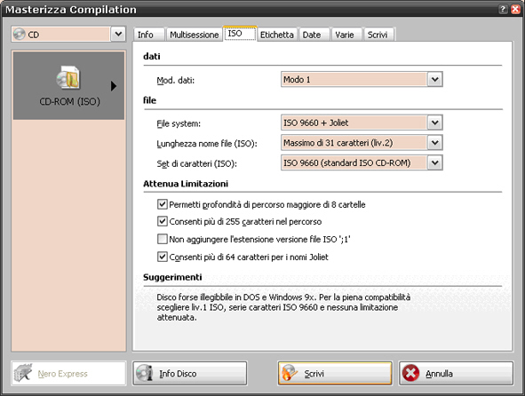
Continue and set (Fig. 2):
- Slower write speed allowed by burning programme (example 8x)
- Write method: Disc-at-once
- Closed disc
Fig. 2
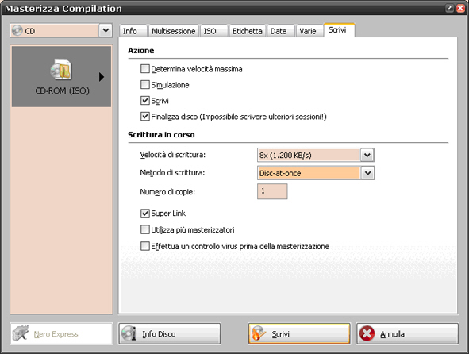
IDENTIFICATION AND CHECK OF THE SOFTWARE UPGRADE CD-ROM
- Place the key on MAR-ON and start the engine.
|
|
during the software upgrade procedure the engine must be always on. |
- The navigator switches on automatically after about 10 seconds from the car starting; if it is off, switch it on pressing the knob on the right bottom part (1 - Fig. 3).
- Press Eject (2 – Fig. 3) and make sure there is no CD-ROM inside.
- Insert the CD-ROM with the software in the suitable reader (A - Fig. 3).
- Wait about 60 seconds until the screen displays a pop-up message, shown in Fig. 3, stating: "CD reading in progress…".
Fig. 3
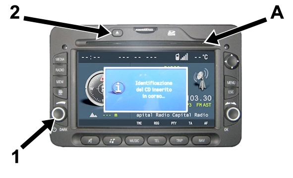
- After about 20 seconds a second pop-up message is displayed, as shown in Fig. 4, stating: "SOFTWARE UPGRADE - The system will restart. Continue? CD 00xx" (00xx is the number of the CD).
- Rotating the right knob (2 - Fig. 4), select YES; press the knob to confirm.
Fig. 4
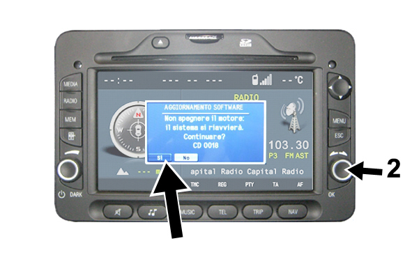
- After selecting YES, the pop-up message, shown in Fig. 5, is displayed, stating: "CD-ROM data check in progress..."
Fig. 5
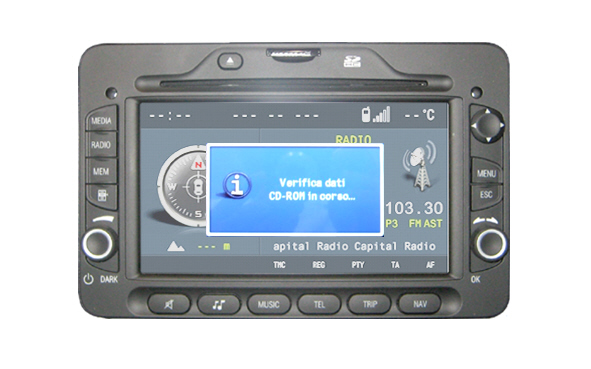
- After about 80 seconds the pop-up message, shown in Fig. 6, is displayed, stating: "SOFTWARE UPGRADE - Reading in process - UPGRADE SETUP".
|
|
This pop-up message is displayed for about 10 seconds, then the display switches off automatically and restarts after about 50 seconds. |
Fig. 6
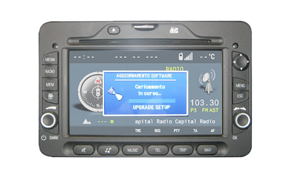
|
|
For these 50 seconds, the display is off, as shown Fig. 7, but the system is working; do not select any option. Once this time interval has elapsed, the software upgrade starts automatically, as below described. |
Fig. 7
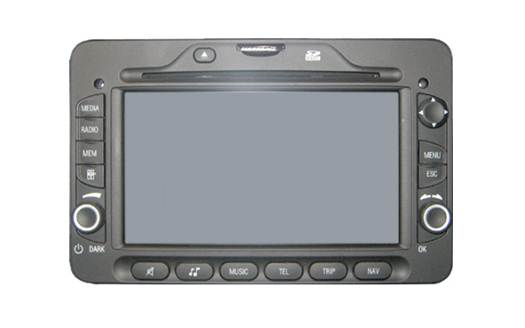
SOFTWARE UPGRADE
The software upgrade starts with the message "Disk check…" displayed on the top left angle; the background displays Alfa Logo, as shown in Fig. 8. The background is the same all the upgrade process long, while the "Disk check" stage lasts about 80 seconds.
Fig. 8
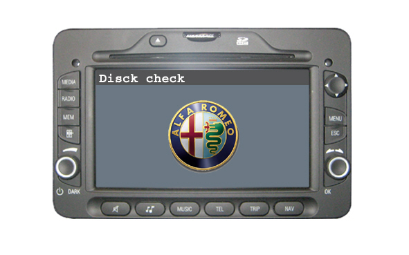
After the "Disk check" stage, the following four stages are made:
1) "Prepare SW Application UPG x/8"
2) "Start Prepare Sw Sd UPG x/5"
3) "Loading UPGRADE APPLICATION: x percent"
4) "Loading UPGRADE FRONT PANEL: x percent"
The stage in progress is always displayed on the display top part.
1) "Prepare SW Application UPG x/8"
This stage, shown in Fig. 9, lasts about 130 seconds.
Fig. 9
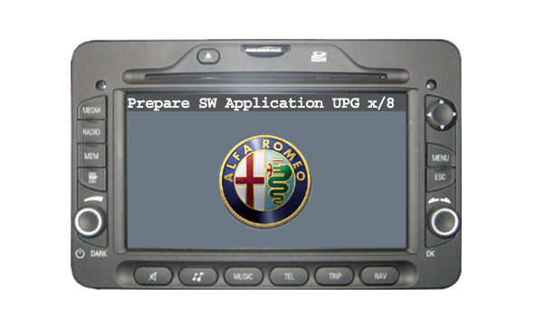
2) "Start Prepare Sw Sd UPG x/5"
This stage, shown in Fig. 10, lasts about 100 seconds.
Fig. 10
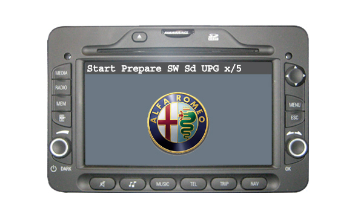
3) "Loading UPGRADE APPLICATION: x percent"
This stage, shown in Fig. 11, lasts about 140 seconds.
Fig. 11
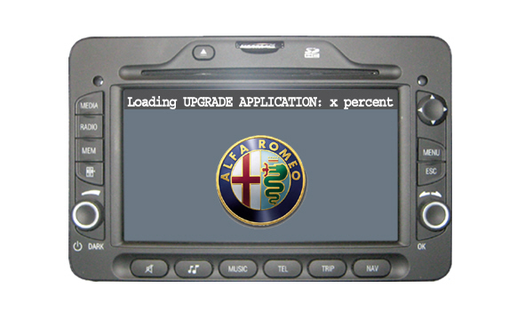
4) "Loading UPGRADE FRONT PANEL: x percent"
This stage, shown in Fig. 12, lasts about 50 seconds.
Fig. 12
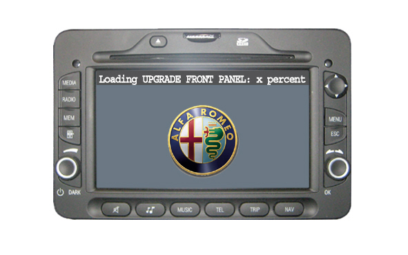
At the end of the 4 above stages, the upgrade ends up with two other messages, shown in Fig. 13, confirming the performed positive procedure.
The two messages are displayed one after the other and there is no waiting time between them. In particular, when the message "System upgrade completed" is displayed, the CD-ROM is automatically ejected and the system switches off.
Fig. 13
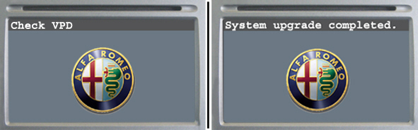
After the switching off, the system restarts automatically and ready to work; place the key on STOP and switch the engine off. The software upgrade procedure is completed.

|
It should be required to enter again the map activation code when the system is restarted (for the activation code entering procedure, see SN 55.11.09). |
|
|
If the car comes with BOSE audio system, turn the key to STOP and wait until the system switches off completely (you should not even hear the light sound of the fan). Putting the key to MAR-ON again, all the system functions are working. |
FAILED SOFTWARE UPGRADE
Should the upgrade operation fail for whatever reason, the procedure must be repeated.
If the upgrade fails during CD-ROM identification and check, that is from the CD-ROM insertion until right before the displaying of the pop-up message stating: "SOFTWARE UPGRADE - Reading in process - UPGRADE SETUP ” (shown in Fig. 4) the CD-ROM is automatically ejected. Retry by inserting the CD-ROM again and, if it fails again, proceed as follows:
- insert an AUDIO CD-ROM or MP3 to make sure the reader works correctly:
- visually make sure that the CD-ROM surface is intact (no scratches, stripes, marks, dusts, etc...)
- check if the application software to be installed is correct for the target product
- use a PC to check if the CD-ROM was burnt correctly (there should be the same folders shown in Fig. 14, that should be selectable by the PC without any error); otherwise, burn a new CD-ROM strictly complying with the above instructions.
Fig. 14
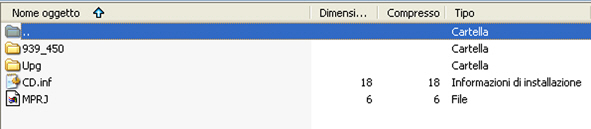
If the process fails in any other stage of Software upgrade, usually the system ejects the CD-ROM automatically. Both if the CD-ROM is ejected or not, proceed as follows:
- Put the key on STOP, switch the engine off and wait until the system switches off completely (you should not even hear the light sound of the fan).
- Restart the engine (key on MAR-ON), insert the CD-ROM if it was ejected and proceed as above described, starting from the "Disk check" stage (shown in Fig. 8).
INFORMATION FOR THE CUSTOMER
Inform the Customer that reprogramming the navigator module not only eliminates possible faults but also introduces the following improvements upgrading the car to those actually produced.
Print the page with the following table and give it to be Customer to be enclosed to the Owner Handbook.
|
NEW LOGIC OF THE PRESET BUTTON |
|
|
Before reprogramming |
After reprogramming |
|
Pressing the button PRESET shortly, the display shows the list of the 6 stored radio stations. Select the desired station using the OK button/knob. After having selected the desired frequency, the display will show the list of 6 positions available with information on the stations currently stored and will allow the user to store the station. |
Pressing the button PRESET shortly, the display shows the list of the 6 stored radio stations. Select the desired station using the OK button/knob. After having selected the desired frequency, pressing the PRESET button the display will show the list of 6 positions available for the storage; select "Store" and then select the desired position using the OK button/knob. |
|
NEW OPTION FOR ENTERING THE DESTINATION ADDRESS |
|
|
Before reprogramming |
After reprogramming |
|
Entering the address of destination: consists of entering the following details: Country, Town, Road, House number or Intersection. |
Destination address entering: consists of entering the following details: Country, Town (ZIP), Road, House number or Intersection. After having selected the "City" item, the display will show a keypad with numbers and letters for entering the name of the city or the corresponding ZIP. |
|
NEW OPTION FOR REPEATING THE NAVIGATION MESSAGE |
|
|
Before reprogramming |
After reprogramming |
|
Pressing the NAV button the Navigation map is displayed. |
Pressing the NAV button the Navigation map is displayed or, in Navigation map mode, the last voice message is repeated. |
CLAIM REPORT DATA
|
Version |
Operation |
Piece |
Fault |
Position |
Time allowance |
|
All models in question |
5580197 |
1 |
RA |
- |
0.30 |